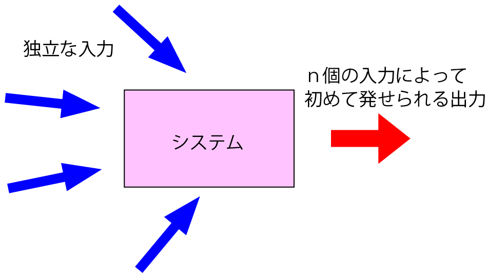

ガンマ分布はどのような生命科学的モデルなのか-01？
こ冒頭でも触れましたように，ガンマ分布の定義は，
ランダムな現象が複数回起こるまでにどのくらいの時間がかかるか？
と説明しました．
一般的によく言われるように，
ランダムなショックが何回か（k回）起ってはじめて故障する場合のモデル（オムロン）
とありますが，この意味は二つ考えられます．
各事象はまったく関係なく起こる
各事象は逐次的に起こる
と言うものです．
・各事象は全く関係なく起こる
これは，以下のイラストにあるように，

独立，ランダムな入力 → ｎ個 → 出力
なる事象，と考えていただけたら，思います．
これは，たとえば，
Ca2+が4個結合すると，構造変化をするタンパク（カルモジュリン？）
CheY-Pが5個結合すると，回転方向が逆転するべん毛モーター
ｎ回のダメージを受けると，倒れるボスキャラ
など，いろいろ考えられますね．
・各事象は逐次的に起こる
この場合には，化学反応で考えられる逐次反応が一番わかりやすい例となります．

この場合にも，実際に得られた反応は，ガンマ分布のような形となります（ここを参照）．
生命科学的には，上記の二つのモデルは全く違います．
では，仮に，
実験データがガンマ分布に従った
場合，どのような反応を考えればよいのでしょう？